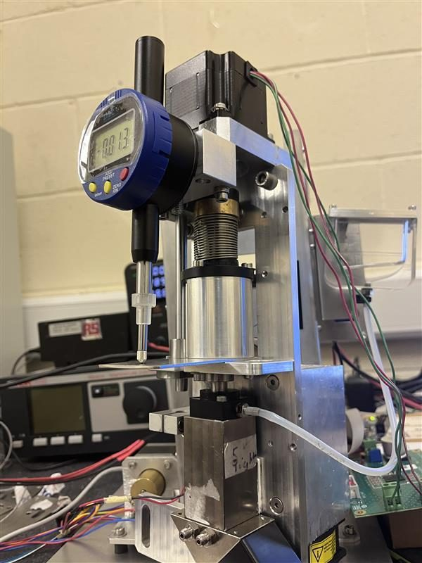
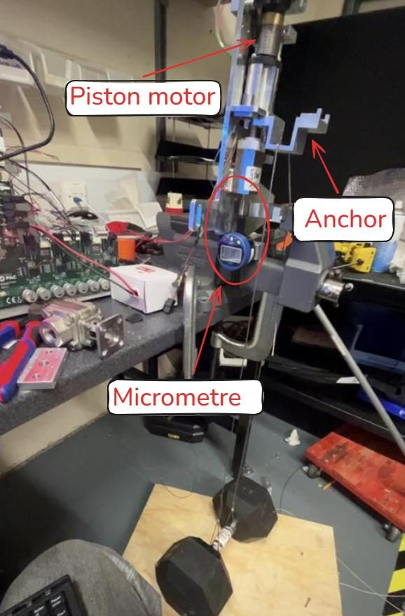

Case study 01
Fixing step loss in a linear actuator
5 µmavg error over 20 mm
- Problem
- The piston actuator that draws in samples as small as 0.238 ml was losing 80–100 µm per 16 mm of travel. The method allows under 50 µm. Swapping the motor didn't help and the supplier had no answer.
- Approach
- Listed and ranked the likely causes: driver current, resonance, misalignment, side loading and backlash. Tested each in turn with a micrometer against the piston and tuned acceleration, velocity, current and motion profiles.
- Root cause
- A misaligned actuator mount, plus a micrometer mounting method that was itself inaccurate.
- Result
- Average error of 5 µm over 20 mm (under 0.025%). Then validated under a 28 kg load using a vertical clamped rig I proposed after the horizontal setup kept slipping.

